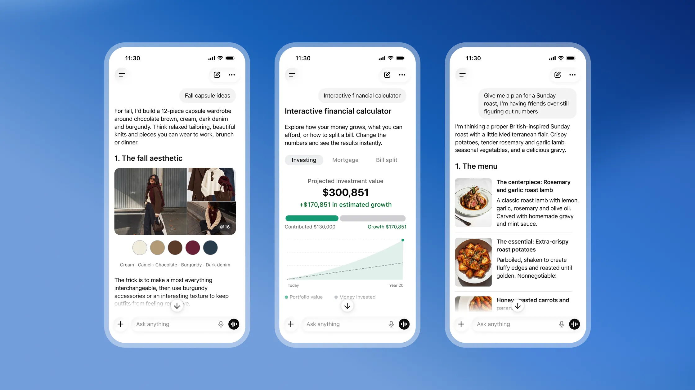

01【ミニ教養】今後、6〜12月で「壊滅的な事態」がやってくる
発行日時：2026年10月11日 05:30 JST
あなたに関係ありそうな理由
AI活用を進める側にも、攻撃者が同じ道具で作業を速める前提のセキュリティ設計が必要になるためです。
概要
記事は、AIがサイバー攻撃の手間と速度を変え始めたことを、企業の危機シナリオと実際に報じられた事案の両方から追う。Axiosによると、AI企業の経営者たちは今後6〜12カ月に壊滅的なAI事態が起きる可能性を想定し、金融サービス、インターネット、電力、水道などを混乱させる大規模なサイバー攻撃を警戒しているという。2025年9月以降だけで、AIを使ったとされる攻撃に関する公開情報は156件に達したと記事は紹介する。これは予言を受け入れる話ではなく、既存の攻撃がどの程度まで自動化され、被害の規模と発見までの時間がどう変わるかを見る材料である。
背景にあるのは、公開モデルやエージェント型の道具が、専門家だけのものではなくなったことだ。Gambit Securityの事例では、攻撃者がStrix、Cairn、Hermesなどを用い、6日間で27組織に105件の攻撃を仕掛け、60万件のカード情報を得たとされる。記事はDeepSeek、GLM、旧世代のClaudeなども攻撃側に使われた例として挙げる。人間が一件ずつ調べていた脆弱性探索、偽メールの作成、侵入後の横展開を、複数の処理として並行させられることが問題の核心になる。AIが新しい侵入口を必ず作るというより、既知の手口の反復速度を上げる点に注意が要る。
日本と韓国でも被害が報じられ、記事は韓国の金融機関7社から約6万8,000人分の個人情報が流出した件を取り上げる。CrowdStrikeは、中国・広東省を拠点とする26歳の人物が、ARTEXと複数の生成AIを使ったとする分析も示した。ただし表示コメントには、現時点で目立つのはウェブ侵入、情報窃取、フィッシング、マルウェアといった従来型の攻撃をAIで効率化する動きだという整理があった。派手な予測だけでなく、足元の攻撃経路をふさぐことが先になる。
防御側もAIを使えるが、予算と人材が足りなければ検知や修正を継続できない。コメントでは、攻撃を高速化するAIへの対抗手段もAIになり得る一方、資産の把握、権限管理、脆弱性修正といった基礎を省けないという論点が出た。経営では「AIを導入したか」ではなく、重要なシステムを誰が管理し、異常をどの時間単位で見つけ、どこまで自動停止できるかを問う必要がある。今後は攻撃件数の見出しだけでなく、侵入方法、影響範囲、復旧時間、企業が公表した対策まで確かめたい。
仕事や会話で使える一言
「AI対策は新しい製品選びだけでなく、既知の弱点を早く直せる運用まで含めて考えたいですね。」
NewsPicks原文を読む
02【危険】「きれいになりたい病」に堕ちる人、抜け出せる人
発行日時：2026年10月11日 05:30 JST
あなたに関係ありそうな理由
サービスや情報が身近になるほど、利用者が自分で距離を取り、支援につながれる設計が大切になるためです。
概要
美容医療や美容情報がSNSと動画を通じて身近になり、「きれいになりたい」という気持ちを口にすること自体の障壁は下がった。記事が焦点を当てるのは、施術を選ぶことを一律に否定する話ではない。容姿への関心が、苦痛や生活の支障を伴うほど強くなったとき、本人と周囲は何を見分け、どこにつながればよいかという問いである。自分の外見がひどく欠点に見える身体醜形症は、強迫症の関連疾患として扱われる。思春期に突然だけ起きるのではなく、ストレスが積み重なるなかで表面化しやすいと説明される。
発症には、もともとの性格傾向、外見について受けた否定的な言葉、遺伝的な要因などが関わり得る。記事は、真面目で頑張り屋の人ほど「もっと整えなければ」と自分を追い込みやすい可能性にも触れる。ただし、SNSを見ているから、あるいは美容医療を受けたから直ちに病気になるわけではない。心配すべき目安は、外見の悩みで学校や仕事、人との約束といった日常機能が崩れ、強い苦痛や抑うつを伴うかどうかだ。ネットの簡易チェックだけで診断せず、必要なら専門家と話すことが前提になる。
抜け出す支えとして、記事は温かな養育、友人との関係、容姿とは別に没頭できる活動を挙げる。生物学上の親に限らず、自分を外見以外の面でも肯定してくれる人や場所があることが大きい。相談先として大学の心理臨床センターは、数千円程度で利用できる場合があり、初めの入口になり得るという。治療には認知行動療法、医師の管理下でのSSRIなどの薬物療法、家族や周囲を含めた支援がある。早く助けを求めるほど選べる支援も増える。
美容医療を提供する側にも役割がある。明確な悩みと目的があるのか、「もっときれいに」「流行の顔に近づきたい」といった終わりの見えない要望なのかを、施術前に確かめる必要がある。繰り返しの施術を望む人には、標準的なスクリーニングを行い、適応がなければ止める判断も求められる。家庭や学校、プラットフォームも、加工や演出された画像を現実と混同させない説明を担う。選択肢を増やすだけでなく、選ばないことや相談することを恥にしない環境をどう作るかが重要になる。早めに気づける関係も支えになる。
仕事や会話で使える一言
「選択肢を増やすことと、選ばない・相談する判断ができることは、別の支えとして必要ですね。」
NewsPicks原文を読む
03すかいらーく「2030年に太陽光2000施設」の現実味…PPA調達と屋根活用の現在地
発行日時：2026年10月11日 06:00 JST
あなたに関係ありそうな理由
脱炭素投資は目標の大きさだけでなく、設備の置き方、契約期間、日々の電力使用との合い方で実現性が変わるためです。
概要
すかいらーくグループは2030年までに太陽光発電を2,000施設へ導入する目標を掲げる。記事は、この数字を掲げるだけでなく、外食チェーンの電力調達が実際にどこまで進んでいるかを、PPAと屋根置きの事例からたどる。PPAは発電設備を自社で保有せず、発電事業者と長期契約を結んで電力を買う方式だ。2024年11月には東北で低圧30地点の発電から84店舗へ電力を送るオフサイトPPAを始めた。2025年4月には関西で1,390kWを85店舗に、同年7月には2,770kWを物流センターと118地点に広げている。
2026年4月には、東京電力を通じて関東の205店舗へ、3カ所の屋根に設けた4,890kW分の電力を供給する計画も示した。遠隔地でつくった電気を契約で配分するオフサイト方式は、まとまった規模を早く増やせる。一方、店舗の屋根に直接置くオンサイトPPAは、2025年12月に鈴与とバーミヤン3店舗で始めた段階だ。合計39kW、年間4万6,000kWhの発電見込みのうち約4万3,500kWh、94％程度を店舗で消費できるとされる。昼間の冷房や厨房の需要と太陽光の発電時間が重なる点が、外食にとっての利点になる。
ただし、屋根置きは「店に太陽光を載せれば終わり」ではない。賃貸物件では大家の同意が必要で、賃貸借契約とPPAの契約期間が合わないことがある。屋根の耐荷重、工事、移転時の撤去費用も検討対象だ。記事は、貸主・借主・PPA事業者の三者で使える契約を標準化する必要性を指摘する。大規模な導入目標に対し、店舗ごとの条件を一つずつ処理する運用がボトルネックになり得る。CO2排出量を2030年に50.4％削減し、2050年に実質ゼロを目指す計画は、その現場運用と切り離せない。
表示コメントは、太陽光、自動車充電、コストを混ぜずに見るべきだと論じる。39kW規模の屋根発電では50kW級の急速充電器を支えられず、EV充電を直結させる話ではない。評価すべきは94％の自家消費率だけでなく、系統電力と比べた総コスト、20年程度に及ぶPPAの価格変動リスク、賃貸物件での責任分担だという。充電は充電事業者、店舗は場所と滞在時間を提供する分業も考えられる。今後は導入施設数だけでなく、契約の中身、実際の自家消費量、電気料金の安定性を見たい。
仕事や会話で使える一言
「脱炭素目標は、設備数よりも物件ごとの契約と電力の使われ方まで見て実現性を判断したいですね。」
NewsPicks原文を読む
04元独情報機関トップ逮捕で衝撃 信頼揺らぎ対ロシア連携影響も
発行日時：2026年10月11日 16:25 JST
あなたに関係ありそうな理由
機密を扱う組織では、個人の信頼に頼るだけでなく、権限・監査・引き継ぎを仕組みとして保つ必要があるためです。
概要
ドイツの対外情報機関BNDの元長官、アウグスト・ハニング氏が10月6日、スパイ行為などの容疑で逮捕された。記事によると、ドイツ検察は、同氏が別の国の情報機関の職員向けに機密情報を含む報告書を作成し、長期にわたり近い情報交換や政治情報の提供を行った疑いを見ている。報道では中国やアゼルバイジャンの関係者との接触も伝えられた。国家安全保障の中枢にいた人物の逮捕は、一人の不正の問題であると同時に、情報機関がどのように機密へのアクセスを管理しているかを問う出来事になっている。
ハニング氏は1998年から2005年までBNDを率い、その後は内務省や安全保障分野の助言役を務めた。記事が伝える容疑には、BNDの元部下から約2,000件の内部文書を金銭と引き換えに受け取ったという疑いも含まれる。この元部下は、BND長官の側近として長く勤務し、機密情報に触れられる立場にあったとされる。退職や異動の後でも人間関係と情報への経路が残るなら、組織図上の権限管理だけでは防げない。機密の価値が高いほど、誰がどの情報にいつ触れたかを追える仕組みが必要になる。
影響はドイツ国内にとどまらない。BNDはロシアの脅威を背景に、欧州各国や米国と情報を交換する立場にある。記事は、今回の疑惑が確定すれば、同機関への信頼と連携の深さに影を落とし得るとみる。情報共有は、すべての資料を同じように渡す関係ではない。相手側の管理能力に疑義が生じれば、渡す情報の範囲や速さが変わり、判断の質にも影響する。対ロシア政策やテロ対策など、即時性が必要な場面ほどその差は大きくなる可能性がある。
表示コメントでは、情報の売買という容疑の衝撃に加え、コンプライアンス、金銭的な誘因、脅迫への耐性を日常的に点検する必要があるという論点が出た。日本についても、スパイ対策の制度や、同じ人が替えの利かない役割に長く居続けることへの懸念が示されている。今回の報道だけで組織全体を断じることはできないが、要職者の経歴だけを信頼の根拠にしないことは重要だ。今後は捜査でどの情報が、誰を通じ、どの期間に渡ったと認定されるのか、BNDと同盟国がどんな再発防止策を示すのかを確認したい。
仕事や会話で使える一言
「重要な情報ほど、信頼できる人に任せるだけでなく、信頼が崩れても追跡できる仕組みが必要ですね。」
NewsPicks原文を読む
05ChatGPTに「Intelligent UI」登場──説明するより見せるチャットボットへ
発行日時：2026年10月11日 11:00 JST

あなたに関係ありそうな理由
会話型AIが文章だけでなく、その場で理解しやすい画面を組み立てるなら、情報の見せ方自体が業務設計の対象になるためです。
概要
ChatGPTに追加された「Intelligent UI」は、質問に答えるために必要なときだけ、文章に加えて図や操作できる表示をつくる機能として紹介されている。記事によると、基盤はGPT-6で、10月7日に有料利用者へ、翌8日に無料版とGoへ展開された。従来のチャットボットは、説明文、箇条書き、表を返すことが中心だった。Intelligent UIは、同じ会話の中で、内容に合わせた専用の視覚表現を出そうとする。狙いは画面を派手にすることではなく、長い説明を読むより、比較や因果を見たほうが早い場面で理解を助けることにある。
記事の筆者は、ナメクジの構造を尋ねた際に操作できる図、サンフランシスコの家賃を尋ねた際に条件を動かせるスライダー、航空券の比較では座席表を試した。回答を読むだけでなく、条件を変えたときに何が変わるかを、その場で確かめられる点が特徴だ。これは既存の検索結果にカードや地図が出る体験に似ているが、質問文と会話の経過に応じて表示が個別に生成される。あらかじめ用意された画面を選ぶのではなく、会話ごとに小さなインターフェースがつくられるため、同じ質問でも利用者の目的によって形が変わり得る。
一方で、視覚化が常に有益とは限らない。プロダクトマネージャーは、表示を足すことで理解が増すか、かえって散らかるかをデザインチームが検討すると説明する。利用者は視覚表現を少なくするよう指示することもできる。文章の答えで十分な問いまで図にすると、生成時間、確認の手間、もっともらしく見える誤りが増えるおそれがある。画面が動くことと、内容が正しいことは別であり、数値、比較条件、出典の確認は引き続き利用者の仕事になる。
記事はGoogleの生成UI型検索にも触れ、チャットボットが文章の応答装置から、個別の画面を用意する存在へ近づく流れを示す。仕事で使うなら、報告書の下書きや調査の入口だけでなく、予算比較、日程調整、物件や座席の選択など、判断の条件を自分で動かしたい場面で価値を試せる。ただし業務画面を置き換えるかは、権限、データの鮮度、説明責任、保存できる履歴まで検討して決めるべきだ。今後は、どの問いに表示が出るのか、操作結果をどう共有できるのか、誤った可視化をどのように訂正できるのかを見たい。
仕事や会話で使える一言
「生成AIは答えを書く道具から、条件を動かして考えるための画面をつくる道具にもなりそうですね。」
NewsPicks原文を読む